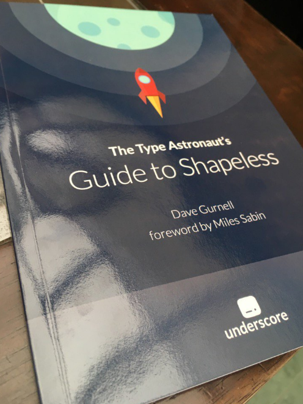
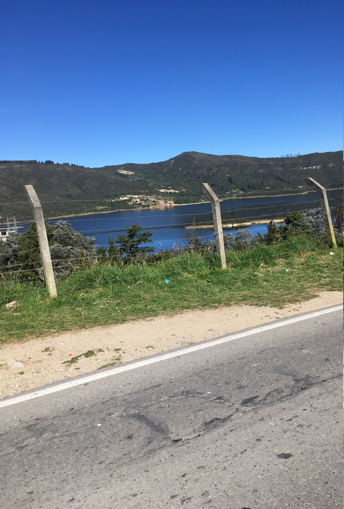

Algo de lo que hice esta semana (15/01/2017 - 22/01/2017)

Ésta fue la segunda semana en mi nuevo trabajo y esta vez fue un poco más movida. Ya tengo acceso de escritura a los repos y he estado haciendo commits y abriendo PRs. Por ahora he cogido tres tickets que son de deuda técnica o arreglar bugs y un solo ticket de un nuevo “feature”. Espero coger tickets más “ambiciosos” la próxima semana.
También esta semana me llegó por correo un libro sobre shapeless que había ordenado. Shapeless es una librería de Scala que permite hacer unas cosas bien locas con los tipos. Es más usada por desarrolladores de librerías, que por desarrolladores de aplicaciones. Pero puedo ver que se puede usar en cosas de serialización o por ejemplo para derivar instancias de type classes automáticamente. El libro se puede conseguir gratuitamente en formato digital pero algunos libros me gusta tenerlos en físico para poderlos rayar. También ví esta charla explicando algunos principios de shapeless. La cosa es una locura: creo que lo que hacen es codificar afirmaciones a través de valores implícitos, en ocasiones de una forma inductiva con casos base y pasos de inducción.
He seguido leyendo El hombre duplicado de Saramago. Espero terminármelo esta semana.
(Ahora que lo recuerdo también estaba leyendo GEB, debería retomarlo)
Por otra parte retomé un poco los problemas de Advent of Code que empecé en Diciembre pero que dejé por un tiempo. Advent Of Code es una serie de retos de programación diarios en los 25 días previos a navidad. En Diciembre llegué hasta el día 15 saltándome los días 9 y 11. Resulta que mi solución para el día 9 estaba mal por una güevonada: me faltaba un .strip() al input. El día 11 no lo he vuelto a leer. En cambio resolví el día 16 y la primera parte del día 17. Algunos problemas son bastante algorítmicos. Algunos tienen el detalle de que la parte dos del problema implica hacerle cambios a la primera parte del problema. En ocasiones es resolver el mismo problema con un input más grande o resolver otro problema relacionado que implica modificar el código. Los he estado resolviendo en Python y unos pocos en Scala.

Con respecto al curso de redes neuronales de Coursera que estaba haciendo lo abandoné (Oh sorpresa). Creo que mi plan para la tercera semana era ponerme al día el Domingo pero ese día por la mañana salí a montar en cicla y por la tarde fuí a un asado del que volví como a media noche, sin los anímos de pegarme una clavada. Me falta retomar esa poquita disciplina que una vez tuve para los cursitos esos en línea. Recuerdo que hace 4 años, cuando todavía estaba en la universidad logré hacer el curso de Machine Learning y el de algoritmos en Coursera. En esa ocasión aprendí bastante de ellos y fuí bastante juicioso. Todavía tengo los apuntes y cuando los veo por encima me sorprendo de lo ñoño que fuí.
El sábado presenté el IELTS, uno de los requerimientos para la visa de trabajo. No fue tan complicado. Por lo que alcancé a sentir es un poco más informal que el TOEFL: algunas preguntas NO son de opción multiple y la parte hablada es con un angloparlante nativo. Necesito tener un puntaje encima de 4 (sobre 9) en todas las secciones, lo que creo que no es tán difícil.
El domingo salí en cicla con mis amigos y llegamos hasta Guasca. Logré subir patios en el segundo plato, lo que sentí como una hazaña. Aunque no recuerdo si es la primera vez que logro hacer esto. Tal vez ya lo había logrado antes pero se me olvidó. El caso es que aunque con el segundo plato a uno le toca hacer más fuerza uno se ve obligado a mover las piernas con mayor lentitud y así es más fácil mantener un mismo ritmo durante todo el trayecto. El alto de Patios era apenas la primera etapa de nuestro recorrido, desde ahí fue una bajada. Pasamos al lado de La Calera y para llegar a Guasca nos tocó otra subida, tal vez no tan exigente y larga como la de Patios pero en ese punto ya estabamos bastante cansados. Para devolvernos a Bogotá decidimos coger la vía que pasa cerca de Sopó, en vez de hacer el recorrido contrario por que a ninguno de nosotros tenía las fuerzas para repetir la subida a Patios. En total fueron como 7 horas en movimiento.
Últimamente he estado pensando mucho en esa idea de los rendimientos decrecientes (o diminishing returns en inglés). La idea, aplicada a procesos de aprendizaje, es que a medida que uno “sube” de nivel empieza a dejar de sentir los mismos “retornos de inversión”, es decir deja de sentir que ha aprendido tanto como antes. Creo que eso me empezó a pasar hace un tiempo. Subí un poquito de nivel en cosas que me interesaban y me descuidé por que no sentía el mismo efecto con lo poco nuevo que aprendía. O tal vez esta sea mi forma de racionalizar mi mediocridad o pereza. Quién sabe. De algo estoy seguro: eso mismo no me está pasando con la cicla. Simplemente en eso me estanqué.